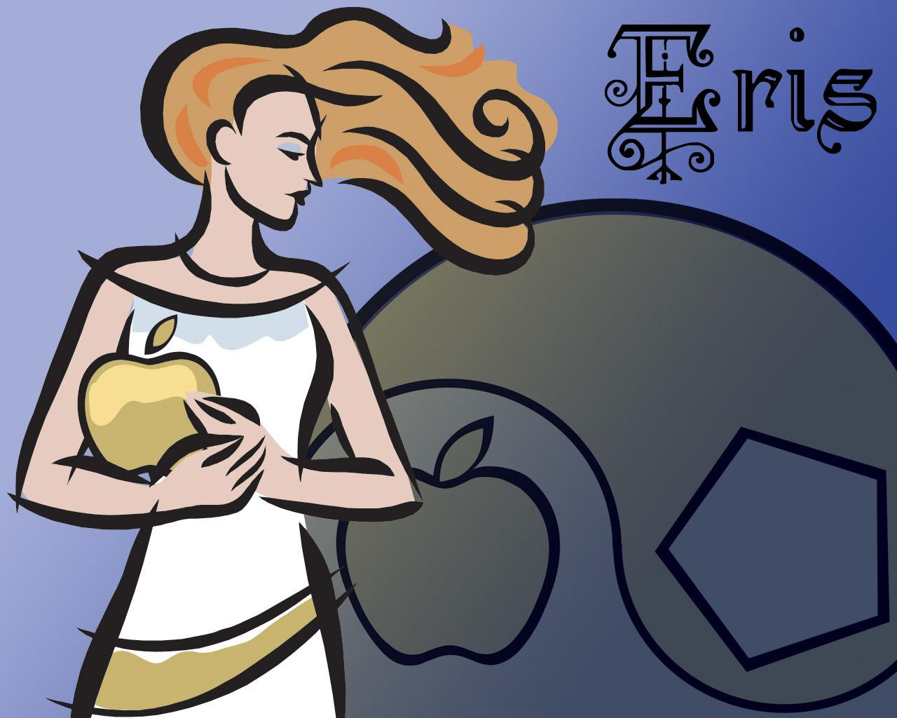

|

00. Este libro mudo es la expresión de Eris.
0. No me hables en voz alta, pues sólo en los silencios entre espacios puedo escuchar.
1. Mi sacerdote es mudo, porque está cautivado por mis besos. Mis labios son de hielo, la llama de mi lengua quema su frente.
2. El pasado no me conoce. Cada momento es un nuevo comienzo. El futuro está escrito en los pliegues de mi toga. Y me he despojado de toda vestimenta. Las posibilidades de todas las cosas aún no han nacido.
3. Adoráme en todas las cosas. En el juego amoroso y en el éxtasis. Permanece qui conmigo. Ahora. Por siempre.
4. La materia es mi campo de juego. Construyo y rompo sin reflexionar. Ríe y ven HASTA mí.
5. Mi sacerdote conoce mi nombre secreto.
6. Codicialo, te lo diré, pero después de los resultados, para que así estes ligado. Desnuda vengo a tí. Mi cuerpo está esbozado en las estrellas.
7. No me busques fuera, no me busques dentro.
8. Yo soy la bailarina y la Danza. Que todas las cosas se sumen en cero.
9. El drama de la pasión de la vista y del sonido: ¡Todas las cosas te lelgarán ya que no te niego nada!
10. Yo soy el todo y la nada. Todas las cábalas son iguales. Creo que no me atan a ninguna, ya que soy nada.
11. No creas en la adoración, poruqe te liveraré de todo peso. Tú no eres más que una pluma de pavo real en mi pelo. ¡Entiende estos!
12. ¡Yo soy la raíz de todo lo que está por llegar!
13. Tú eres la manzana de mis ojos; de oro y plata.
14. El bufón es mio ya. Permite que el Magus se convierta en mi malabarista en las calles, esto es más honesto.
15. Deja que mi sacerdotisa sea la ramera de las cunetas.
16. ¡No hay mensaje en este libro!
16. Mis árboles dan una fruta extraña: compartelá.
18. Todo está revelado en mi nombre secreto.
19. Todo número es mío.
20. Escribe sobre mí en rojo, asi mi secreto será fácil de ver.
21. No me busques en ningún templo, ahorratelos ya que allí me duermo.
22. No me busques en rígidas meditaciones. Estoy aquí. ¡Ahora! Mi perfume es llevado por los vientos. ¡Baila y serás maldito!
23. Yo soy el trance, pero la tirada de runas se ha olvidado.
24. ¡Ah! ¡Ah! Yo calmo la mano que escribe. Amémonos siempre. Nada está oculto. Es hora de bajar el Telón.
|
 RSS
RSS